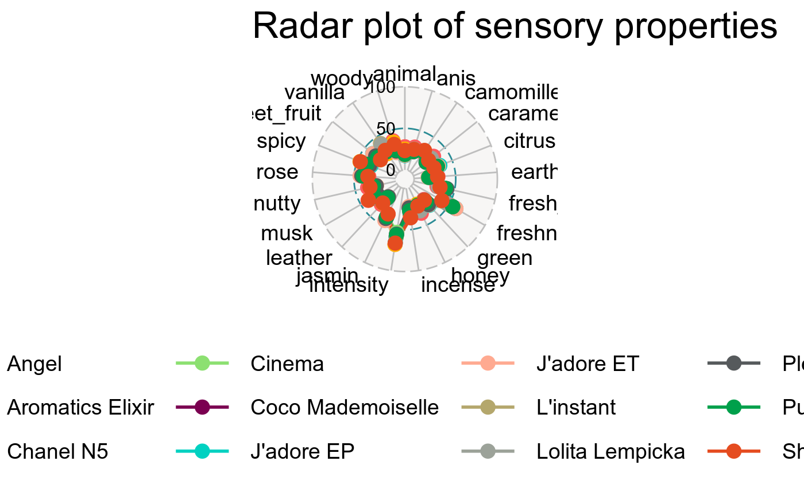
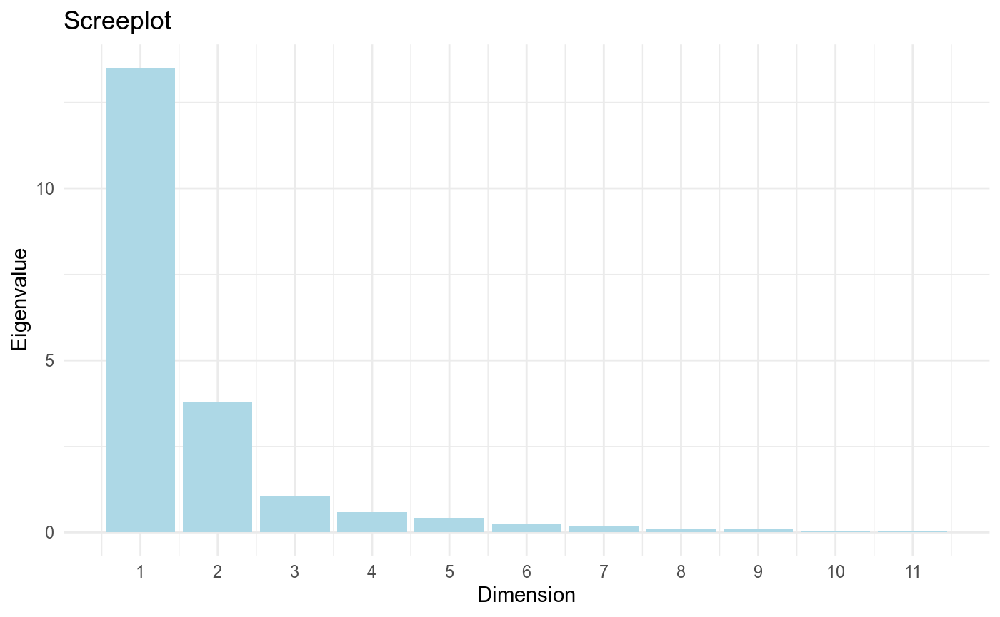
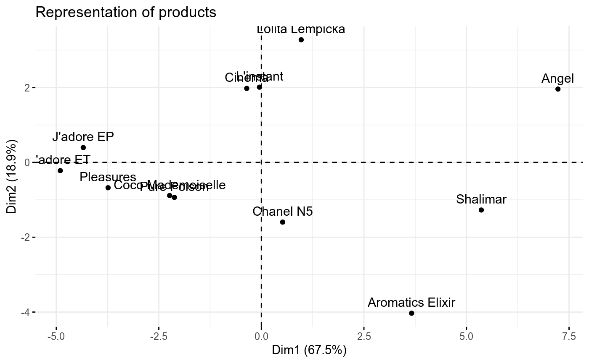
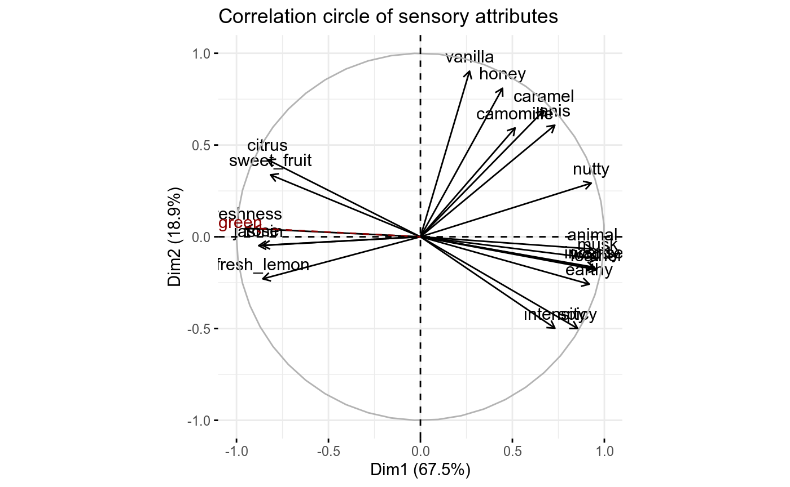

df <- specify(
data = perfume_qda_consumers,
sensory_method = "QDA",
panelist = consumer,
product = product,
attribute = intensity:green,
hedonic = NULL
)
df
#> # A sensory table: <1236 x 23>
#> # Sensory method: Quantitative Descriptive Analysis
#> # Panelist: consumer <103 subjects>
#> # Product: product <12 items>
#> # Attribute: intensity, freshness, jasmin, ro...<21 lexicons>
#> # Hedonic: None
#> consumer product intensity freshness jasmin rose camomille fresh_lemon
#> <fct> <fct> <dbl> <dbl> <dbl> <dbl> <dbl> <dbl>
#> 1 171 Angel 77 36.1 30 13.3 15.2 15.2
#> 2 171 Aromat… 69.7 26.7 75.2 17.9 15.5 16.7
#> 3 171 Chanel… 52.7 50.6 41.5 45.8 18.8 17.6
#> 4 171 Cinema 70 60.9 26.4 21.8 18.8 20.6
#> 5 171 Coco M… 73 66.1 40.6 18.2 15.2 15.2
#> 6 171 J'ador… 61.8 58.5 30 14.2 16.7 20.9
#> 7 171 J'ador… 48.8 50.9 46.1 48.2 18.2 22.7
#> 8 171 L'inst… 67.3 22.7 15.8 16.1 14.5 36.1
#> 9 171 Lolita… 76.7 19.1 27.9 17 16.1 16.7
#> 10 171 Pleasu… 52.4 67.6 49.4 62.7 20.9 46.4
#> # … with 1,226 more rows, and 15 more variables: vanilla <dbl>,
#> # citrus <dbl>, anis <dbl>, sweet_fruit <dbl>, honey <dbl>,
#> # caramel <dbl>, spicy <dbl>, woody <dbl>, leather <dbl>, nutty <dbl>,
#> # musk <dbl>, animal <dbl>, earthy <dbl>, incense <dbl>, green <dbl>qda_local <- analyse(df, "local")
qda_local
#> # Local analysis:
#> # Sensory method: Quantitative Descriptive Analysis
#> # Analytical method: Analysis of variance
#> # Model: Attribute ~ Product + Panelist
#> attribute statistic p.value Angel `Aromatics Elix… `Chanel N5` Cinema
#> <chr> <dbl> <dbl> <dbl> <dbl> <dbl> <dbl>
#> 1 freshness 16.6 1.38e-30 41.9 44.2 48.0 52.7
#> 2 intensity 13.5 2.02e-24 68.2 68.3 66.1 53.6
#> 3 leather 13.0 1.83e-23 30.4 28.1 21.3 19.7
#> 4 earthy 12.4 3.06e-22 28.8 26.7 20.6 17.2
#> 5 vanilla 11.9 2.98e-21 37.0 26.0 29.7 38.6
#> 6 woody 11.4 2.64e-20 37.2 35.3 27.2 25.7
#> 7 spicy 10.4 2.99e-18 43.6 46.7 40.4 34.4
#> 8 incense 9.44 2.05e-16 33.3 31.4 29.4 25.7
#> 9 caramel 9.08 1.08e-15 33.0 22.8 24.2 26.3
#> 10 animal 8.56 1.17e-14 27.8 25.0 19.4 19.8
#> # … with 11 more rows, and 8 more variables: `Coco Mademoiselle` <dbl>,
#> # `J'adore EP` <dbl>, `J'adore ET` <dbl>, `L'instant` <dbl>, `Lolita
#> # Lempicka` <dbl>, Pleasures <dbl>, `Pure Poison` <dbl>, Shalimar <dbl>
visualise(qda_local, min_scales = 0, max_scales = 100)
qda_global <- analyse(df, "global")
qda_global
#> # Global analysis:
#> # Sensory method: Quantitative Descriptive Analysis
#> # Analytical method: Principal Component Analysis
#> # Active individual: 12 items
#> # Active variable: 21 lexicons
#> # Supplementary variable: None
#> #
#> # Description of: Eigenvalue
#> # Number of dimension: 11
#> dimension eigenvalue pct_variance pct_cum_variance
#> <dbl> <dbl> <dbl> <dbl>
#> 1 1 13.5 67.5 67.5
#> 2 2 3.77 18.9 86.4
#> 3 3 1.04 5.22 91.6
#> 4 4 0.581 2.91 94.5
#> 5 5 0.422 2.11 96.6
#> 6 6 0.232 1.16 97.8
#> 7 7 0.170 0.852 98.7
#> 8 8 0.116 0.580 99.2
#> 9 9 0.0849 0.425 99.7
#> 10 10 0.0405 0.202 99.9
#> 11 11 0.0266 0.133 100
#> #
#> # Description of: Product <12 items>
#> # Dimension: Dim 1 x 2
#> product dim1 dim2 quality contribution
#> <chr> <dbl> <dbl> <dbl> <dbl>
#> 1 Angel 7.23 1.96 0.932 27.1
#> 2 Shalimar 5.36 -1.27 0.895 14.6
#> 3 Aromatics Elixir 3.66 -4.03 0.947 14.3
#> 4 J'adore ET -4.90 -0.221 0.880 11.6
#> 5 J'adore EP -4.34 0.396 0.874 9.17
#> 6 Pleasures -3.74 -0.677 0.901 6.95
#> 7 Lolita Lempicka 0.971 3.28 0.844 5.63
#> 8 Coco Mademoiselle -2.24 -0.887 0.682 2.79
#> 9 Pure Poison -2.12 -0.935 0.759 2.59
#> 10 L'instant -0.0464 2.01 0.670 1.95
#> 11 Cinema -0.357 1.98 0.495 1.95
#> 12 Chanel N5 0.518 -1.60 0.480 1.36
#> #
#> # Description of: Sensory attribute <20 lexicons>
#> # Dimension: Dim 1 x 2
#> attribute dim1 dim2 quality contribution
#> <chr> <dbl> <dbl> <dbl> <dbl>
#> 1 spicy 0.855 -0.500 0.980 5.67
#> 2 leather 0.957 -0.179 0.949 5.49
#> 3 nutty 0.929 0.293 0.948 5.49
#> 4 musk 0.964 -0.121 0.943 5.46
#> 5 woody 0.948 -0.169 0.927 5.37
#> 6 caramel 0.671 0.688 0.924 5.35
#> 7 incense 0.944 -0.166 0.919 5.32
#> 8 freshness -0.953 0.0462 0.910 5.27
#> 9 earthy 0.918 -0.258 0.909 5.26
#> 10 anis 0.731 0.608 0.903 5.23
#> 11 vanilla 0.267 0.903 0.886 5.13
#> 12 animal 0.936 -0.0667 0.881 5.10
#> 13 citrus -0.831 0.420 0.867 5.02
#> 14 honey 0.446 0.809 0.854 4.94
#> 15 fresh_lemon -0.857 -0.229 0.787 4.55
#> 16 intensity 0.731 -0.498 0.783 4.53
#> 17 sweet_fruit -0.815 0.338 0.779 4.51
#> 18 jasmin -0.879 -0.0483 0.776 4.49
#> 19 rose -0.859 -0.0464 0.739 4.28
#> 20 camomille 0.515 0.593 0.617 3.57
visualise(qda_global, choice = "eigenvalue")

